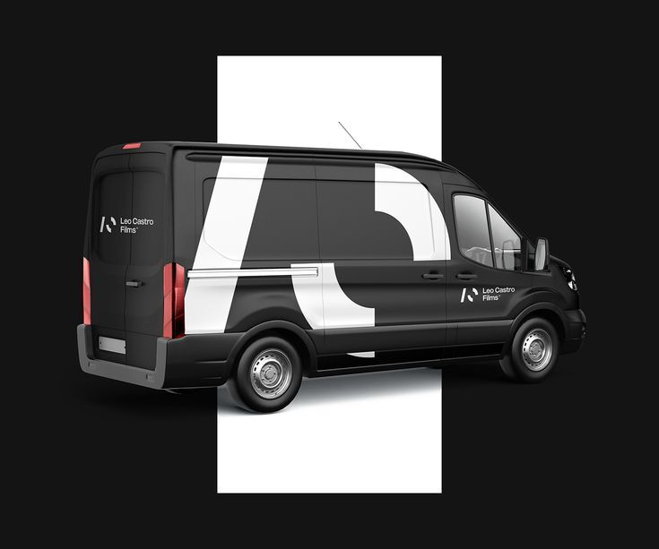
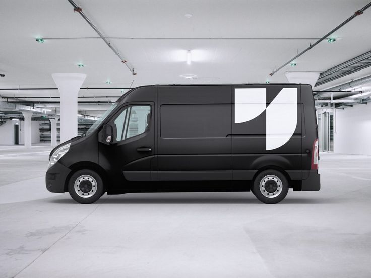

Spår 1
Monogram i arkitekturskala
En enda form ur logotypen, så stor att bilens kanter skär av den.




- Delvis, Caddy
- Vit Caddy med en jättelik avskuren bokstav i en färg. Ser helfolierad ut men täcker bara en tredjedel.
- Full, Transporter
- Transportern i mörk färg, samma form i vitt.
- Risk
- Kräver en logotyp med en form som håller i två meters storlek. Dagens a med blixt kan bli klyschigt, så formen kan behöva göras om.
Är det här rätt spår?